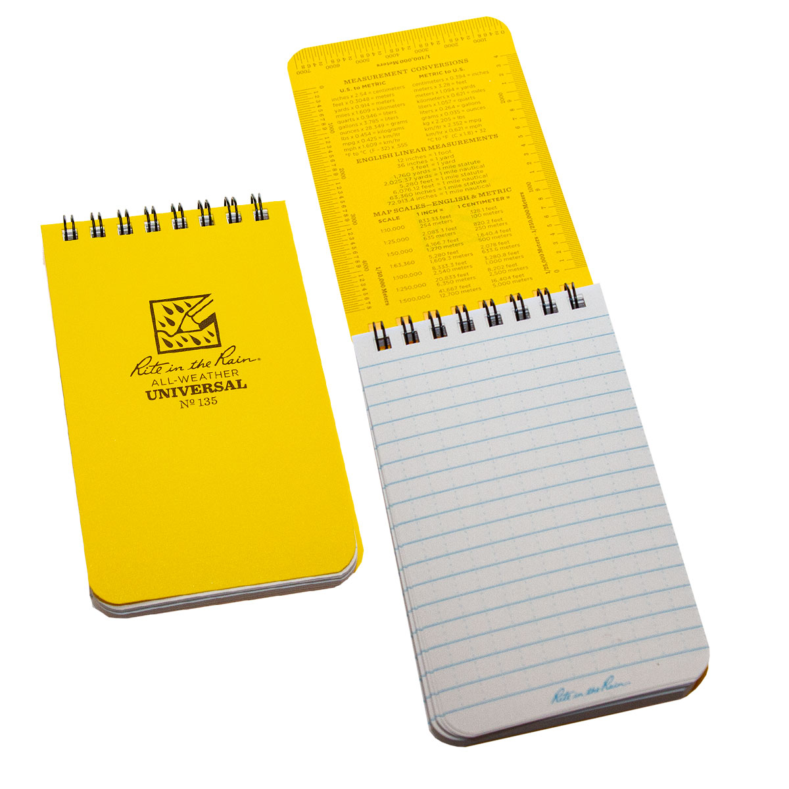

MEMO NOTE

The pocket notebook has become as much a part of EDC culture as the bifold wallet
With the rise in popularity of smartphones in the past 10 years
why not just jot down information on an iPhone app and call it a day?
Not only is jotting down lists onto a notebook with a pen still faster than opening your phone with your passcode
scrolling for the note-taking app you need, and typing away on a virtual keyboard that is a fraction of the size of your fingers
a pocket notebook is also more reliable than an $800 dollar piece of technology
will allow you to write down phone numbers, ideas, lists, and notes long after your smartphone’s battery has died at around lunch time.
A pocket notebook fits securely in your back pocket and, unlike your smartphone
won’t crack or break when dropped from standing height.
There are many different styles to choose from, depending on your lifestyle or personal carrying preferences
with each EDC notebook offering it’s carrier something unique from the rest.
Whether you’re looking to overhaul your current everyday carry ensemble or just add a bit more functionality to it